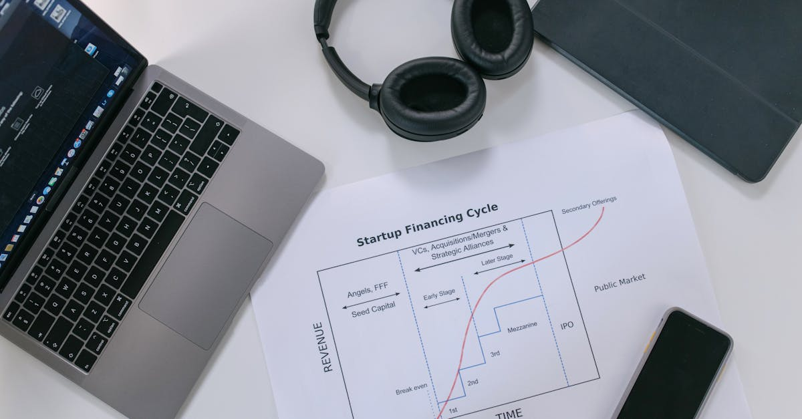

L'Intelligence Artificielle au Cœur des Stratégies Politiques Américaines
L'écosystème de l'intelligence artificielle (IA) connaît une effervescence sans précédent, dépassant désormais le seul domaine technologique pour s'immiscer dans les arcanes du pouvoir politique. Une illustration frappante de cette tendance nous vient des États-Unis, où deux figures emblématiques du capital-risque, Marc Andreessen et Ben Horowitz, ont récemment injecté 25 millions de dollars dans un Super Political Action Committee (Super PAC) dédié à la promotion de l'IA. Cet apport spectaculaire porte la cagnotte totale de cette organisation à plus de 50 millions de dollars, une somme colossale destinée à influencer le débat public et les décisions politiques, particulièrement en vue des élections de mi-mandat de novembre. Ce mouvement stratégique souligne la reconnaissance par les investisseurs majeurs du potentiel disruptif de l'IA, non seulement sur le plan économique mais aussi sur le plan sociétal et politique. La création et le financement massif de tels comités d'action politique par des acteurs du monde de la tech témoignent d'une volonté affirmée de façonner le cadre réglementaire et l'opinion publique favorables au développement et à l'adoption de l'IA. Il ne s'agit plus seulement de développer des algorithmes ou des produits innovants, mais de construire un environnement propice à leur déploiement à grande échelle. L'objectif est clair : s'assurer que les décideurs politiques comprennent les enjeux de l'IA et soutiennent activement son essor, potentiellement en allégeant les contraintes réglementaires ou en encourageant les investissements publics dans la recherche et le développement. Cette somme considérable sera utilisée pour des campagnes de sensibilisation, du lobbying et potentiellement pour soutenir des candidats partageant la vision de ces titans de la tech. L'enjeu est de taille : garantir que les États-Unis restent à la pointe de cette révolution technologique majeure.

Andreessen et Horowitz : Des Investisseurs Visionnaires et Influents
Marc Andreessen et Ben Horowitz, fondateurs respectifs d'Andreessen Horowitz (a16z), l'un des fonds de capital-risque les plus influents de la Silicon Valley, sont réputés pour leur capacité à identifier et à soutenir les technologies émergentes à fort potentiel. Leur engagement financier massif envers un Super PAC pro-IA n'est donc pas une surprise, mais plutôt la confirmation de leur conviction profonde quant à l'importance capitale de l'intelligence artificielle pour l'avenir. Leur fonds, a16z, a déjà investi massivement dans de nombreuses startups liées à l'IA, des entreprises développant des modèles de langage génératifs aux plateformes d'infrastructure pour l'IA, en passant par des solutions d'automatisation basées sur l'IA. Cet investissement politique s'inscrit dans une stratégie plus globale visant à sécuriser l'écosystème favorable au développement de ces technologies. En injectant 25 millions de dollars supplémentaires, ils ne font pas qu'augmenter la trésorerie du Super PAC ; ils envoient un signal fort au marché et aux décideurs politiques : l'IA est une priorité stratégique qui mérite un soutien politique et réglementaire conséquent. Ce financement vise à contrer les éventuelles voix critiques ou les appels à une régulation trop stricte qui pourraient freiner l'innovation. Il s'agit de promouvoir une vision optimiste et dynamique de l'IA, en mettant en avant ses bénéfices potentiels pour l'économie, la productivité et le progrès humain. Les sommes engagées permettent d'envisager des campagnes d'information ciblées, des études d'impact économique commanditées, et un lobbying actif auprès des membres du Congrès et des agences gouvernementales. La philosophie d'Andreessen et Horowitz a toujours été de construire les industries de demain, et leur action actuelle confirme que l'IA est au centre de leur vision pour le futur, tant sur le plan technologique que sur celui de son influence sociétale et politique.
Le Rôle Stratégique des Super PACs dans le Financement Politique
Les Super PACs sont des organisations politiques américaines qui peuvent collecter et dépenser des fonds illimités pour faire campagne en faveur ou à l'encontre de candidats, à condition qu'elles ne coordonnent pas leurs actions directement avec les campagnes officielles. Créés suite à la décision de justice Citizens United v. Federal Election Commission en 2010, ils ont profondément transformé le paysage du financement politique aux États-Unis. Leur capacité à mobiliser des sommes considérables leur confère un pouvoir d'influence considérable, capable de façonner le discours politique et d'influencer l'opinion publique via des spots publicitaires, des campagnes sur les réseaux sociaux et des événements de sensibilisation. Dans le cas présent, le Super PAC pro-IA bénéficie d'une manne financière exceptionnelle, lui permettant de mener des actions d'envergure. L'objectif est de créer un environnement politique favorable à l'essor de l'IA, ce qui peut se traduire par plusieurs actions concrètes :
- Plaider pour des politiques d'innovation ouvertes : Encourager le développement de l'IA sans entraves réglementaires excessives.
- Promouvoir les bénéfices économiques de l'IA : Mettre en avant la création d'emplois, l'augmentation de la productivité et la compétitivité américaine.
- Soutenir les recherches et les infrastructures : Inciter le gouvernement à investir davantage dans la recherche fondamentale et appliquée en IA, ainsi que dans les infrastructures numériques nécessaires.
- Sensibiliser le public et les élus : Éduquer sur le potentiel de l'IA tout en adressant les préoccupations légitimes concernant l'éthique et la sécurité.
Cette stratégie vise à construire un consensus politique autour de l'IA, en présentant l'industrie comme un moteur de croissance et de prospérité. Le financement de plus de 50 millions de dollars permet au Super PAC de mener une campagne d'influence soutenue et multicanale, capable de marquer les esprits avant les élections cruciales. C'est une démonstration de force du secteur technologique, qui cherche à s'assurer un avenir réglementaire et politique aligné avec ses ambitions de croissance exponentielle.

Implications pour l'Avenir de la Technologie et de l'Économie
L'investissement massif dans un Super PAC pro-IA par des figures comme Andreessen et Horowitz a des implications profondes et multidimensionnelles, allant bien au-delà de la simple sphère politique. Sur le plan technologique, cela signifie une accélération potentielle du développement et de l'adoption de l'IA. En favorisant un environnement réglementaire clément, ces acteurs cherchent à minimiser les freins à l'innovation, permettant aux entreprises de tester, déployer et commercialiser plus rapidement leurs solutions basées sur l'IA. Cela pourrait se traduire par des avancées plus rapides dans des domaines variés, de la médecine à la finance, en passant par les transports et la création de contenu. Économiquement, l'objectif affiché est de positionner les États-Unis en leader incontesté de l'IA, un secteur appelé à remodeler l'économie mondiale. En bénéficiant d'un cadre politique favorable, les entreprises américaines d'IA pourraient gagner un avantage concurrentiel significatif sur la scène internationale. Cela implique une promotion active des bénéfices de l'IA en termes de création de richesse, d'augmentation de la productivité et de compétitivité nationale. Cependant, cette approche soulève également des questions importantes. Une régulation trop laxiste pourrait exacerber les inégalités, entraîner des pertes d'emplois massives dans certains secteurs, ou encore poser des défis éthiques et de sécurité majeurs si le développement de l'IA n'est pas encadré par des garde-fous appropriés. L'influence accrue des acteurs financiers sur le débat politique soulève aussi des préoccupations quant à la concentration du pouvoir et à la représentativité des intérêts.
IA et Trading Crypto : Un Lien Stratégique Émergent
Dans le contexte actuel de financiarisation croissante de l'IA et de son intégration dans divers secteurs économiques, le domaine des cryptomonnaies et du trading représente un terrain d'application particulièrement fertile et stratégique. L'intelligence artificielle, avec ses capacités d'analyse prédictive, de traitement de volumes massifs de données et d'exécution automatisée, offre des outils révolutionnaires pour naviguer sur les marchés financiers, y compris les marchés cryptos, réputés pour leur volatilité et leur complexité. Les investisseurs et les développeurs qui soutiennent activement l'essor de l'IA, comme le font Andreessen et Horowitz, comprennent intuitivement le potentiel de ces technologies pour transformer les stratégies d'investissement. L'IA peut analyser en temps réel des données on-chain, des flux d'actualités mondiales, des indicateurs macroéconomiques et des schémas de marché pour identifier des opportunités de trading que l'œil humain pourrait manquer. Des agents IA sophistiqués peuvent être programmés pour exécuter des transactions à haute fréquence, optimiser les portefeuilles, gérer les risques et s'adapter dynamiquement aux conditions changeantes du marché. L'automatisation du trading grâce à l'IA permet d'opérer 24h/24 et 7j/7, une caractéristique particulièrement pertinente pour les marchés cryptos qui ne dorment jamais. Les Super PACs financés par ces mêmes investisseurs, en promouvant un environnement favorable à l'IA, contribuent indirectement à créer un écosystème où ces technologies de trading avancées peuvent prospérer et être adoptées plus largement. Un cadre politique et réglementaire clair et encourageant est essentiel pour le développement d'outils d'IA pour le trading, car il favorise l'innovation, la confiance des investisseurs et la sécurité des plateformes. L'objectif de ces investissements massifs est de façonner un avenir où l'IA est un pilier de l'économie, et cela inclut naturellement la manière dont les actifs numériques et les marchés financiers sont gérés et négociés.
Les Défis Éthiques et Réglementaires à l'Horizon
Malgré l'enthousiasme généralisé et les investissements colossaux, le développement rapide de l'IA soulève des défis éthiques et réglementaires considérables que les décideurs politiques, soutenus ou influencés par des acteurs comme Andreessen et Horowitz, devront impérativement adresser. La question de la prise de décision autonome par les IA, notamment dans des domaines critiques comme la finance ou la défense, pose des problèmes de responsabilité en cas d'erreur ou de dommage. Comment attribuer la faute lorsqu'une IA prend une décision aux conséquences néfastes ? Le biais algorithmique est une autre préoccupation majeure : les IA, entraînées sur des données historiques, peuvent perpétuer, voire amplifier, les discriminations existantes dans la société. Cela peut avoir des impacts dévastateurs dans des domaines tels que le recrutement, l'octroi de crédits ou la justice prédictive. La protection de la vie privée est également mise à rude épreuve par les capacités de collecte et d'analyse de données toujours plus poussées des systèmes d'IA. Le risque de surveillance de masse et d'utilisation abusive des données personnelles est réel. Enfin, la question de l'impact sur l'emploi est centrale. Si l'IA promet d'augmenter la productivité, elle risque également d'automatiser de nombreux emplois, nécessitant une transition économique et sociale majeure pour accompagner les travailleurs affectés. Le financement de Super PACs par des acteurs majeurs de l'IA vise à orienter le débat vers des solutions qui favorisent l'innovation, mais il est crucial que ce débat n'ignore pas ces enjeux fondamentaux. Une régulation équilibrée est nécessaire : elle doit encourager l'innovation tout en protégeant les citoyens, en garantissant l'équité et en prévenant les dérives potentielles. La manière dont ces défis seront relevés déterminera la trajectoire future de l'IA et son impact réel sur nos sociétés.
Conclusion : L'IA, un Enjeu Stratégique au Carrefour de la Tech et de la Politique
L'investissement de 25 millions de dollars par Andreessen et Horowitz, portant la cagnotte du Super PAC pro-IA à plus de 50 millions, marque un tournant significatif dans la relation entre le monde de la technologie et la sphère politique américaine. Il ne s'agit plus seulement d'innover et de créer de la valeur économique, mais de façonner activement l'environnement réglementaire et l'opinion publique pour assurer la suprématie et le développement de l'intelligence artificielle. Cette démarche, bien que légale, soulève des questions sur l'influence croissante des intérêts privés dans le processus démocratique. Pour les acteurs de la finance et du trading, notamment dans l'univers volatile des cryptomonnaies, l'IA représente une frontière technologique clé. Les outils basés sur l'IA promettent de révolutionner les stratégies d'investissement, l'analyse de marché et la gestion des risques, offrant des avantages concurrentiels considérables. L'environnement politique et réglementaire façonné par des initiatives comme celle-ci aura donc un impact direct sur l'adoption et l'efficacité de ces technologies de trading avancées. Alors que l'IA continue de progresser à un rythme effréné, il est essentiel de trouver un équilibre entre l'encouragement de l'innovation et la gestion des risques éthiques, sociaux et économiques. Le débat public doit rester informé et ouvert, considérant toutes les facettes de cette révolution technologique. L'enjeu est de construire un avenir où l'IA bénéficie à l'ensemble de la société, et pas seulement à quelques-uns.